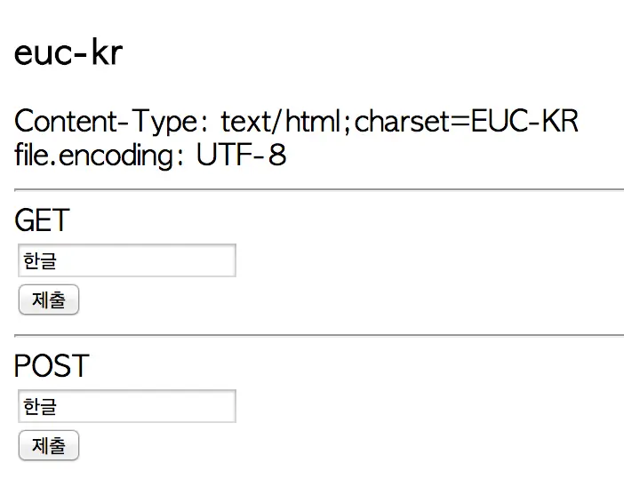
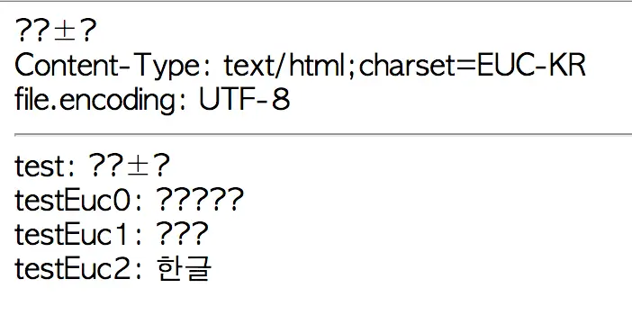
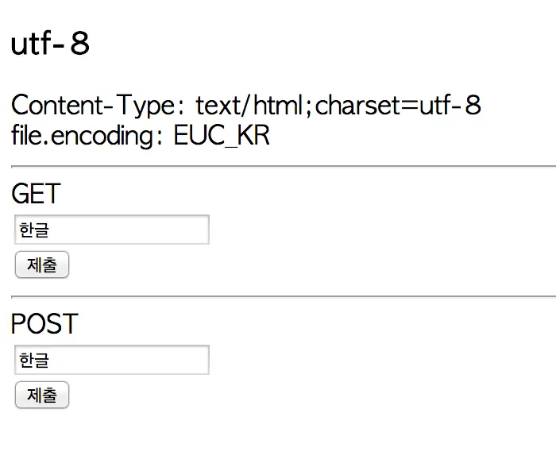
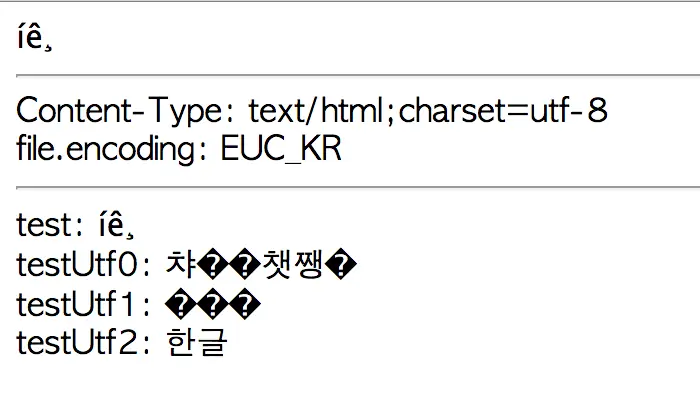
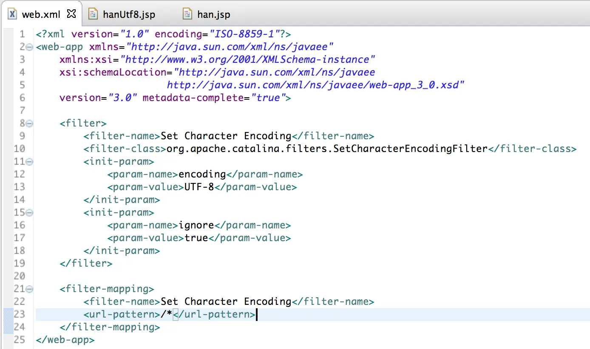
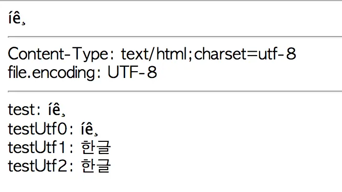
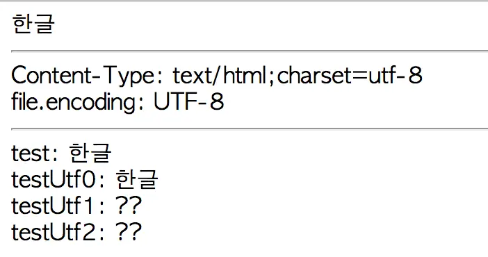

utf-8, euc-kr 인코딩과 환경변수, 페이지 인코딩에 따른, 파라미터 전달
비교
Sample Code 이클립스에서
Existing Project...로 import
환경
- jdk 1.7
- Tomcat 7.0.53
- MacOSX 10.9.4
시스템 환경변수 utf-8
페이지 인코딩 utf-8
페이지 인코딩 euc-kr
-

-
GET
-
POST

시스템 환경변수 euc-kr
페이지 인코딩 euc-kr
페이지 인코딩 utf-8
-

-
GET

-
POST
Filter
- WEB-INF/web.xml 파일에 filter, filter-mapping 태그 설정
- org.apache.catalina.filters.SetCharacterEncodingFilter
-

-
GET
-
POST
정리
-
filter를 이용하면 POST방식으로 데이터 전송할 때, 인코딩 변환 코드가
없어도 한글 파라미터를 깨지지 않고 수신 가능
- GET방식으로 한글 전송시 filter의 적용과 상관없이 인코딩 필요